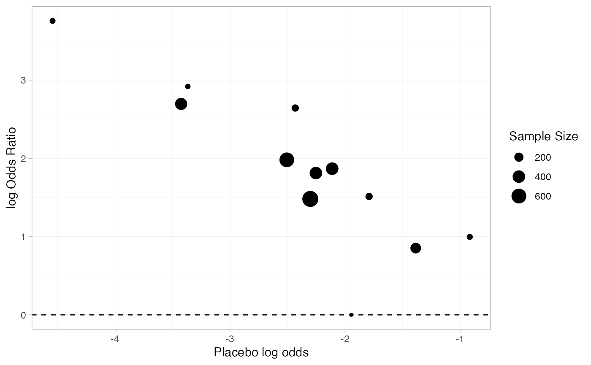
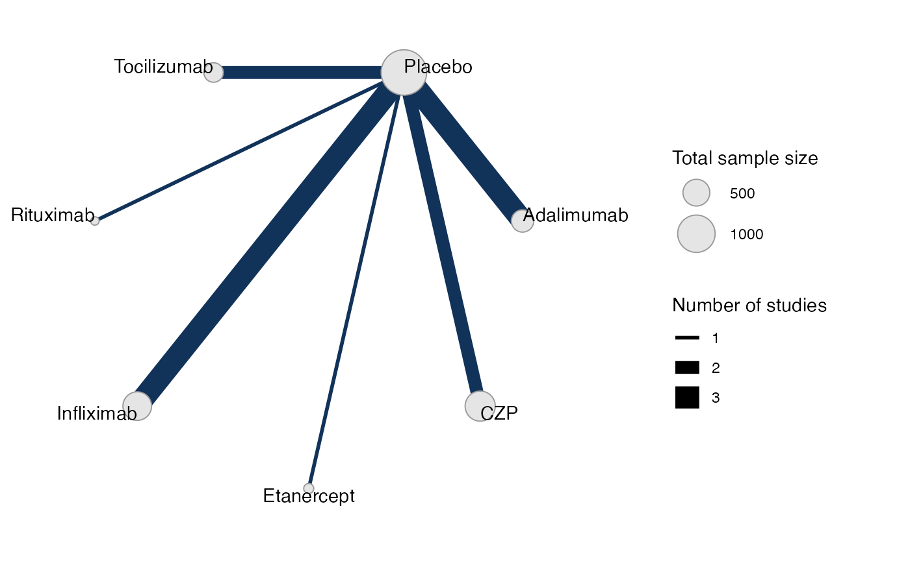
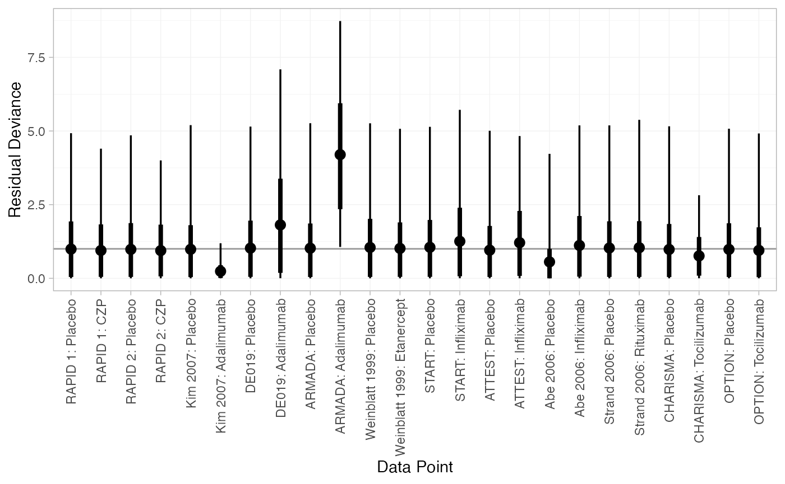
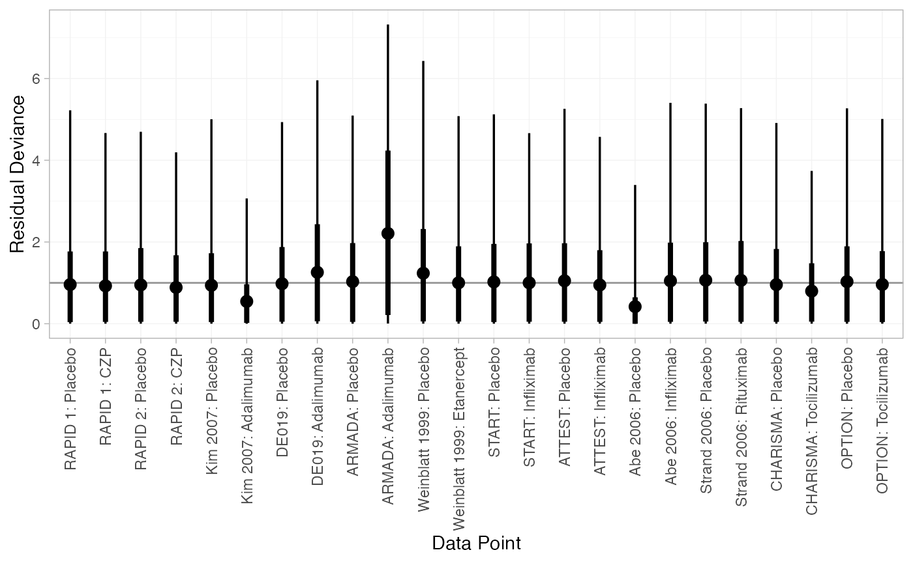
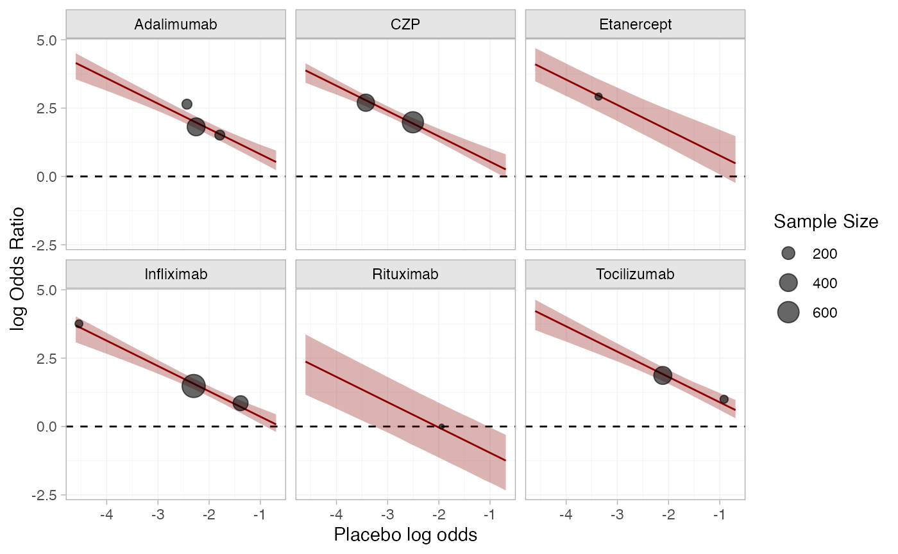
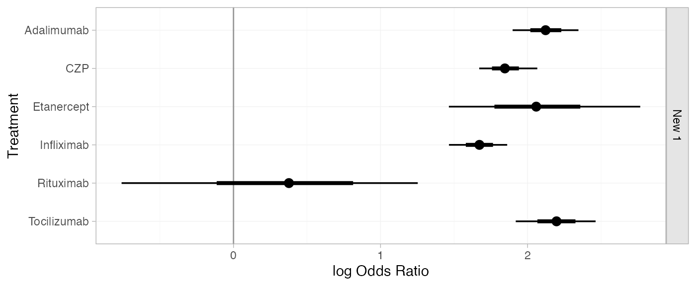
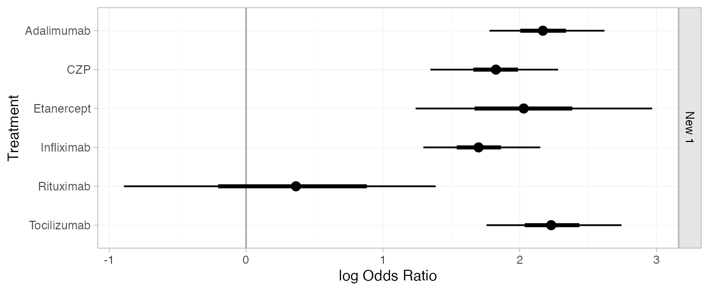
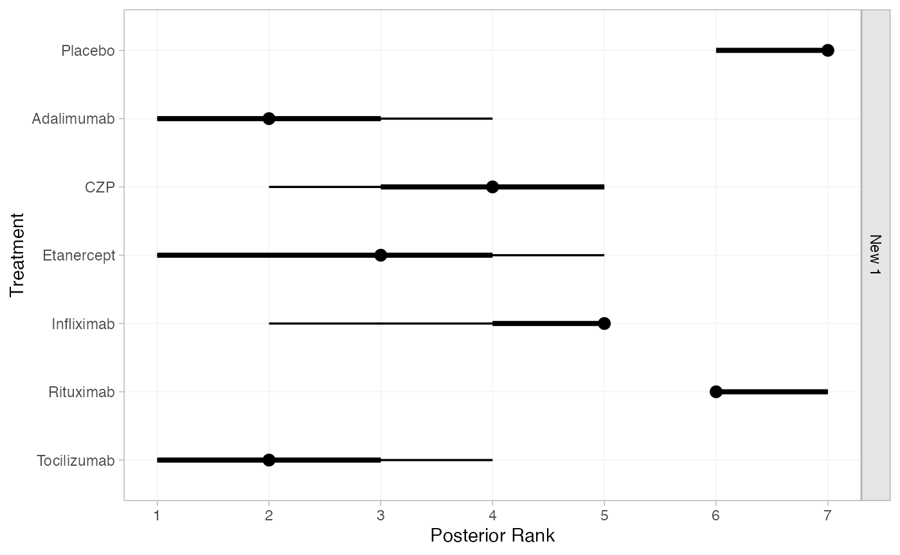
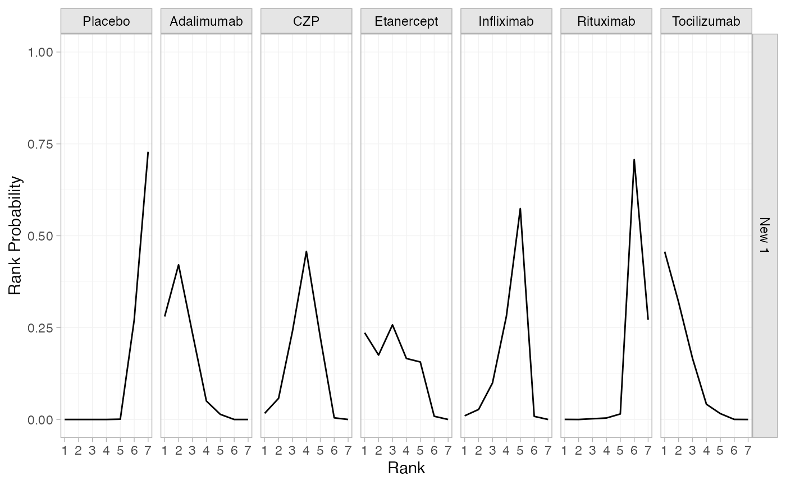
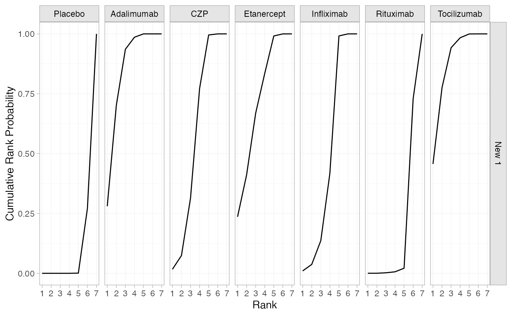

library(multinma)
options(mc.cores = parallel::detectCores())#> For execution on a local, multicore CPU with excess RAM we recommend calling
#> options(mc.cores = parallel::detectCores())
#>
#> Attaching package: 'multinma'
#> The following objects are masked from 'package:stats':
#>
#> dgamma, pgamma, qgamma
library(dplyr)
#>
#> Attaching package: 'dplyr'
#> The following objects are masked from 'package:stats':
#>
#> filter, lag
#> The following objects are masked from 'package:base':
#>
#> intersect, setdiff, setequal, union
library(ggplot2)This vignette describes the analysis of 12 trials comparing 6
treatments against placebo for “the treatment of rheumatoid arthritis
(RA) in patients who had failed on disease-modifying anti-rheumatic
drugs (DMARDs)” (Dias et al.
2011). The data are available in this package as
certolizumab:
head(certolizumab)
#> study trt r n disease_duration
#> 1 RAPID 1 Placebo 15 199 6.15
#> 2 RAPID 1 CZP 146 393 6.15
#> 3 RAPID 2 Placebo 4 127 5.85
#> 4 RAPID 2 CZP 80 246 5.85
#> 5 Kim 2007 Placebo 9 63 6.85
#> 6 Kim 2007 Adalimumab 28 65 6.85Dias et al. (2011) used this data to demonstrate baseline risk meta-regression models. Plotting the baseline risk against the treatment effect, we suspect there might be an effect of the baseline risk on the treatment effect. Specifically, the log baseline odds (placebo in this case) seem to be negatively linearly correlated with the odds ratio. For purposes of plotting only, we apply a continuity correction to the Abe 2006 study, in which no events were observed on placebo.
certolizumab <-
certolizumab %>%
group_by(study) %>%
mutate(
cc = any(r == 0),
probability = if_else(cc, (r + 0.5) / (n + 0.5), r / n),
odds = probability / (1 - probability),
log_odds = log(odds)
)
p_baseline_risk <-
left_join(
filter(certolizumab, trt != "Placebo"),
filter(certolizumab, trt == "Placebo"),
by = "study",
suffix = c("", "_baseline")
) %>%
mutate(log_odds_ratio = log_odds - log_odds_baseline, n_total = n + n_baseline) %>%
ggplot(aes(log_odds_baseline)) +
geom_hline(yintercept = 0, linetype = "dashed") +
labs(x = "Placebo log odds", y = "log Odds Ratio", size = "Sample Size") +
theme_multinma()
p_baseline_risk +
geom_point(aes(y = log_odds_ratio, size = n_total))
Setting up the network
We begin by setting up the network.
cert_net <- set_agd_arm(certolizumab,
study = study, trt = trt, n = n, r = r,
trt_class = if_else(trt == "Placebo", "Placebo", "Treatment"))
cert_net
#> A network with 12 AgD studies (arm-based).
#>
#> ------------------------------------------------------- AgD studies (arm-based) ----
#> Study Treatment arms
#> Abe 2006 2: Placebo | Infliximab
#> ARMADA 2: Placebo | Adalimumab
#> ATTEST 2: Placebo | Infliximab
#> CHARISMA 2: Placebo | Tocilizumab
#> DE019 2: Placebo | Adalimumab
#> Kim 2007 2: Placebo | Adalimumab
#> OPTION 2: Placebo | Tocilizumab
#> RAPID 1 2: Placebo | CZP
#> RAPID 2 2: Placebo | CZP
#> START 2: Placebo | Infliximab
#> ... plus 2 more studies
#>
#> Outcome type: count
#> ------------------------------------------------------------------------------------
#> Total number of treatments: 7, in 2 classes
#> Total number of studies: 12
#> Reference treatment is: Placebo
#> Network is connectedPlot the network structure.
plot(cert_net, weight_edges = TRUE, weight_nodes = TRUE)
Meta-analysis models
We fit both fixed effect (FE) and random effects (RE) models. The
special variable .mu is used in the regression
formula to specify a baseline risk meta-regression model.
Fixed effect meta-analysis
cert_fit_FE <- nma(cert_net,
trt_effects = "fixed",
regression = ~.mu:.trt,
prior_intercept = normal(scale = sqrt(1000)),
prior_trt = normal(scale = 100),
prior_reg = normal(scale = 100),
adapt_delta = 0.95)
#> Note: Setting "Placebo" as the network reference treatment.We may see a few divergent transitions due to the zero on placebo in
Abe 2006; increasing adapt_delta to 0.95 here helps to
minimise these.
Basic parameter summaries are given by the print()
method:
cert_fit_FE
#> A fixed effects NMA with a binomial likelihood (logit link).
#> Regression model: ~.mu:.trt.
#> Centred covariates at the following overall mean values:
#> .mu
#> -2.41557
#> Inference for Stan model: binomial_1par.
#> 4 chains, each with iter=2000; warmup=1000; thin=1;
#> post-warmup draws per chain=1000, total post-warmup draws=4000.
#>
#> mean se_mean sd 2.5% 25% 50% 75%
#> beta[.mu:.trtclassTreatment] -0.93 0.00 0.09 -1.03 -0.99 -0.96 -0.88
#> d[Adalimumab] 2.12 0.00 0.11 1.90 2.05 2.12 2.20
#> d[CZP] 1.85 0.00 0.10 1.67 1.78 1.85 1.91
#> d[Etanercept] 2.07 0.01 0.34 1.46 1.85 2.06 2.27
#> d[Infliximab] 1.67 0.00 0.10 1.47 1.61 1.67 1.74
#> d[Rituximab] 0.35 0.01 0.50 -0.76 0.03 0.38 0.69
#> d[Tocilizumab] 2.20 0.00 0.14 1.92 2.11 2.20 2.29
#> lp__ -1708.53 0.08 3.09 -1715.37 -1710.43 -1708.27 -1706.28
#> 97.5% n_eff Rhat
#> beta[.mu:.trtclassTreatment] -0.69 738 1.01
#> d[Adalimumab] 2.35 3832 1.00
#> d[CZP] 2.07 1940 1.00
#> d[Etanercept] 2.77 1328 1.00
#> d[Infliximab] 1.86 2621 1.00
#> d[Rituximab] 1.25 4552 1.00
#> d[Tocilizumab] 2.46 2863 1.00
#> lp__ -1703.43 1589 1.00
#>
#> Samples were drawn using NUTS(diag_e) at Tue Apr 14 08:25:38 2026.
#> For each parameter, n_eff is a crude measure of effective sample size,
#> and Rhat is the potential scale reduction factor on split chains (at
#> convergence, Rhat=1).Random effects meta-analysis
cert_fit_RE <- nma(cert_net,
trt_effects = "random",
regression = ~.mu:.trt,
prior_intercept = normal(scale = sqrt(1000)),
prior_trt = normal(scale = 100),
prior_reg = normal(scale = 100),
prior_het = half_normal(2.5),
adapt_delta = 0.95)
#> Note: Setting "Placebo" as the network reference treatment.
#> Warning: There were 6 divergent transitions after warmup. See
#> https://mc-stan.org/misc/warnings.html#divergent-transitions-after-warmup
#> to find out why this is a problem and how to eliminate them.
#> Warning: Examine the pairs() plot to diagnose sampling problemsBasic parameter summaries are given by the print()
method:
cert_fit_RE
#> A random effects NMA with a binomial likelihood (logit link).
#> Regression model: ~.mu:.trt.
#> Centred covariates at the following overall mean values:
#> .mu
#> -2.41557
#> Inference for Stan model: binomial_1par.
#> 4 chains, each with iter=2000; warmup=1000; thin=1;
#> post-warmup draws per chain=1000, total post-warmup draws=4000.
#>
#> mean se_mean sd 2.5% 25% 50% 75%
#> beta[.mu:.trtclassTreatment] -0.95 0.00 0.10 -1.09 -1.00 -0.97 -0.91
#> d[Adalimumab] 2.17 0.01 0.21 1.78 2.06 2.17 2.29
#> d[CZP] 1.82 0.01 0.23 1.35 1.72 1.83 1.93
#> d[Etanercept] 2.04 0.01 0.44 1.24 1.77 2.03 2.26
#> d[Infliximab] 1.70 0.00 0.21 1.30 1.59 1.70 1.81
#> d[Rituximab] 0.34 0.01 0.58 -0.89 -0.04 0.36 0.74
#> d[Tocilizumab] 2.24 0.01 0.24 1.76 2.09 2.23 2.37
#> lp__ -1714.52 0.13 4.42 -1723.95 -1717.33 -1714.27 -1711.38
#> tau 0.22 0.01 0.18 0.01 0.10 0.18 0.29
#> 97.5% n_eff Rhat
#> beta[.mu:.trtclassTreatment] -0.70 445 1.02
#> d[Adalimumab] 2.62 1670 1.00
#> d[CZP] 2.28 1625 1.00
#> d[Etanercept] 2.97 1853 1.00
#> d[Infliximab] 2.15 2034 1.00
#> d[Rituximab] 1.39 3859 1.00
#> d[Tocilizumab] 2.74 1590 1.00
#> lp__ -1706.97 1087 1.00
#> tau 0.69 617 1.00
#>
#> Samples were drawn using NUTS(diag_e) at Tue Apr 14 08:25:43 2026.
#> For each parameter, n_eff is a crude measure of effective sample size,
#> and Rhat is the potential scale reduction factor on split chains (at
#> convergence, Rhat=1).Model comparison
Model fit can be checked using the dic() function:
(dic_FE <- dic(cert_fit_FE))
#> Residual deviance: 27.1 (on 24 data points)
#> pD: 18.7
#> DIC: 45.7
(dic_RE <- dic(cert_fit_RE))
#> Residual deviance: 24.3 (on 24 data points)
#> pD: 21.5
#> DIC: 45.8We can also examine the residual deviance contributions with the
corresponding plot() method.
plot(dic_FE)
plot(dic_RE)
Baseline risk meta-regression
Plotting the estimated baseline risk effect (fixed effect model) together with the crude odds ratios.
cert_mu_reg <-
cert_fit_FE %>%
relative_effects(
newdata = tibble(.mu = seq(log(0.01), log(0.5), length.out = 20)),
study = .mu
) %>%
as_tibble() %>%
mutate(
trt = .trtb,
log_odds_baseline = as.numeric(as.character(.study))
)
p_baseline_risk +
facet_wrap(vars(trt)) +
geom_ribbon(aes(ymin = `2.5%`, ymax = `97.5%`), data = cert_mu_reg,
fill = "darkred", alpha = 0.3) +
geom_line(aes(y = mean), data = cert_mu_reg,
colour = "darkred") +
geom_point(aes(y = log_odds_ratio, size = n_total), alpha = 0.6)
Further results
For comparison with Dias et al. (2011), we can produce relative effects
against placebo at the average observed log odds, using the
relative_effects() function:
newdata <- data.frame(.mu = cert_fit_FE$xbar[[".mu"]])
(cert_releff_FE <- relative_effects(cert_fit_FE, newdata = newdata))
#> ------------------------------------------------------------------ Study: New 1 ----
#>
#> Covariate values:
#> .mu
#> -2.42
#>
#> mean sd 2.5% 25% 50% 75% 97.5% Bulk_ESS Tail_ESS Rhat
#> d[New 1: Adalimumab] 2.12 0.11 1.90 2.05 2.12 2.20 2.35 3901 2446 1
#> d[New 1: CZP] 1.85 0.10 1.67 1.78 1.85 1.91 2.07 2230 1630 1
#> d[New 1: Etanercept] 2.07 0.34 1.46 1.85 2.06 2.27 2.77 1822 1200 1
#> d[New 1: Infliximab] 1.67 0.10 1.47 1.61 1.67 1.74 1.86 2862 1771 1
#> d[New 1: Rituximab] 0.35 0.50 -0.76 0.03 0.38 0.69 1.25 4849 2305 1
#> d[New 1: Tocilizumab] 2.20 0.14 1.92 2.11 2.20 2.29 2.46 2947 2587 1
plot(cert_releff_FE, ref_line = 0)
(cert_releff_RE <- relative_effects(cert_fit_RE, newdata = newdata))
#> ------------------------------------------------------------------ Study: New 1 ----
#>
#> Covariate values:
#> .mu
#> -2.42
#>
#> mean sd 2.5% 25% 50% 75% 97.5% Bulk_ESS Tail_ESS Rhat
#> d[New 1: Adalimumab] 2.17 0.21 1.78 2.06 2.17 2.29 2.62 1987 948 1.00
#> d[New 1: CZP] 1.82 0.23 1.35 1.72 1.83 1.93 2.28 2009 1483 1.00
#> d[New 1: Etanercept] 2.04 0.44 1.24 1.77 2.03 2.26 2.97 2097 1625 1.00
#> d[New 1: Infliximab] 1.70 0.21 1.30 1.59 1.70 1.81 2.15 2238 1726 1.00
#> d[New 1: Rituximab] 0.34 0.58 -0.89 -0.04 0.36 0.74 1.39 4174 1795 1.00
#> d[New 1: Tocilizumab] 2.24 0.24 1.76 2.09 2.23 2.37 2.74 1647 1599 1.01
plot(cert_releff_RE, ref_line = 0)
Without providing newdata,
relative_effects() will produce relative effects per study.
Note that the estimated study-specific intercepts are used.
(cert_releff_study_RE <- relative_effects(cert_fit_RE))
#> --------------------------------------------------------------- Study: Abe 2006 ----
#>
#> Covariate values:
#> .mu
#> -13.86
#>
#> mean sd 2.5% 25% 50% 75% 97.5% Bulk_ESS Tail_ESS Rhat
#> d[Abe 2006: Adalimumab] 13.40 12.16 2.71 5.21 8.92 17.16 49.31 1035 927 1.01
#> d[Abe 2006: CZP] 13.04 12.14 2.51 4.89 8.49 16.76 49.14 1050 1080 1.01
#> d[Abe 2006: Etanercept] 13.26 12.11 2.77 5.14 8.69 16.88 49.28 1225 1335 1.00
#> d[Abe 2006: Infliximab] 12.92 12.15 2.29 4.78 8.43 16.64 48.88 1072 1192 1.01
#> d[Abe 2006: Rituximab] 11.56 12.15 0.73 3.46 7.08 15.24 47.28 1068 1166 1.01
#> d[Abe 2006: Tocilizumab] 13.46 12.16 2.72 5.31 9.00 17.23 49.47 1042 852 1.01
#>
#> ----------------------------------------------------------------- Study: ARMADA ----
#>
#> Covariate values:
#> .mu
#> -2.46
#>
#> mean sd 2.5% 25% 50% 75% 97.5% Bulk_ESS Tail_ESS Rhat
#> d[ARMADA: Adalimumab] 2.23 0.52 1.30 1.87 2.19 2.56 3.36 3047 2593 1
#> d[ARMADA: CZP] 1.88 0.51 0.93 1.54 1.84 2.20 2.95 3708 2685 1
#> d[ARMADA: Etanercept] 2.09 0.61 0.96 1.70 2.06 2.46 3.34 3914 2068 1
#> d[ARMADA: Infliximab] 1.76 0.51 0.85 1.41 1.72 2.08 2.87 3154 2824 1
#> d[ARMADA: Rituximab] 0.40 0.75 -1.06 -0.11 0.38 0.90 1.94 3728 2090 1
#> d[ARMADA: Tocilizumab] 2.29 0.53 1.39 1.92 2.25 2.61 3.41 2942 2765 1
#>
#> ----------------------------------------------------------------- Study: ATTEST ----
#>
#> Covariate values:
#> .mu
#> -1.41
#>
#> mean sd 2.5% 25% 50% 75% 97.5% Bulk_ESS Tail_ESS Rhat
#> d[ATTEST: Adalimumab] 1.22 0.31 0.62 1.02 1.21 1.41 1.85 3481 2239 1
#> d[ATTEST: CZP] 0.87 0.35 0.20 0.65 0.86 1.08 1.58 2389 1779 1
#> d[ATTEST: Etanercept] 1.08 0.54 0.08 0.77 1.07 1.38 2.23 1554 987 1
#> d[ATTEST: Infliximab] 0.75 0.33 0.12 0.54 0.74 0.96 1.42 2964 2076 1
#> d[ATTEST: Rituximab] -0.62 0.62 -1.87 -1.03 -0.58 -0.19 0.57 4533 2690 1
#> d[ATTEST: Tocilizumab] 1.28 0.33 0.64 1.07 1.27 1.48 1.94 3317 2276 1
#>
#> --------------------------------------------------------------- Study: CHARISMA ----
#>
#> Covariate values:
#> .mu
#> -0.94
#>
#> mean sd 2.5% 25% 50% 75% 97.5% Bulk_ESS Tail_ESS Rhat
#> d[CHARISMA: Adalimumab] 0.77 0.38 0.04 0.51 0.76 1.02 1.52 3213 2346 1.00
#> d[CHARISMA: CZP] 0.42 0.42 -0.39 0.15 0.42 0.68 1.24 2108 1566 1.00
#> d[CHARISMA: Etanercept] 0.63 0.58 -0.43 0.27 0.61 0.96 1.90 1416 840 1.01
#> d[CHARISMA: Infliximab] 0.30 0.39 -0.45 0.05 0.30 0.55 1.08 2489 1585 1.00
#> d[CHARISMA: Rituximab] -1.06 0.65 -2.41 -1.49 -1.04 -0.61 0.15 4125 2349 1.00
#> d[CHARISMA: Tocilizumab] 0.83 0.39 0.08 0.58 0.83 1.08 1.61 3167 2529 1.00
#>
#> ------------------------------------------------------------------ Study: DE019 ----
#>
#> Covariate values:
#> .mu
#> -2.28
#>
#> mean sd 2.5% 25% 50% 75% 97.5% Bulk_ESS Tail_ESS Rhat
#> d[DE019: Adalimumab] 2.05 0.31 1.45 1.84 2.04 2.25 2.66 3002 2489 1
#> d[DE019: CZP] 1.70 0.34 1.02 1.49 1.70 1.91 2.35 2624 2212 1
#> d[DE019: Etanercept] 1.91 0.50 0.96 1.59 1.91 2.21 2.97 2238 1758 1
#> d[DE019: Infliximab] 1.58 0.32 0.98 1.37 1.58 1.77 2.21 3069 2497 1
#> d[DE019: Rituximab] 0.21 0.62 -1.07 -0.19 0.24 0.64 1.38 4038 2141 1
#> d[DE019: Tocilizumab] 2.11 0.33 1.49 1.89 2.10 2.32 2.77 3098 2474 1
#>
#> --------------------------------------------------------------- Study: Kim 2007 ----
#>
#> Covariate values:
#> .mu
#> -1.85
#>
#> mean sd 2.5% 25% 50% 75% 97.5% Bulk_ESS Tail_ESS Rhat
#> d[Kim 2007: Adalimumab] 1.64 0.40 0.88 1.36 1.62 1.89 2.46 3916 2702 1
#> d[Kim 2007: CZP] 1.29 0.42 0.45 1.01 1.29 1.56 2.13 2772 2255 1
#> d[Kim 2007: Etanercept] 1.50 0.58 0.40 1.14 1.49 1.83 2.71 2081 1809 1
#> d[Kim 2007: Infliximab] 1.17 0.41 0.38 0.90 1.16 1.43 2.00 3450 2614 1
#> d[Kim 2007: Rituximab] -0.20 0.67 -1.53 -0.63 -0.18 0.25 1.10 4590 2542 1
#> d[Kim 2007: Tocilizumab] 1.70 0.41 0.91 1.43 1.69 1.95 2.56 3645 2871 1
#>
#> ----------------------------------------------------------------- Study: OPTION ----
#>
#> Covariate values:
#> .mu
#> -2.13
#>
#> mean sd 2.5% 25% 50% 75% 97.5% Bulk_ESS Tail_ESS Rhat
#> d[OPTION: Adalimumab] 1.91 0.30 1.33 1.71 1.89 2.09 2.52 3708 2191 1
#> d[OPTION: CZP] 1.55 0.32 0.92 1.36 1.56 1.76 2.17 2849 2114 1
#> d[OPTION: Etanercept] 1.77 0.50 0.81 1.47 1.76 2.06 2.78 2057 1631 1
#> d[OPTION: Infliximab] 1.44 0.31 0.85 1.25 1.43 1.63 2.07 2942 2125 1
#> d[OPTION: Rituximab] 0.07 0.62 -1.19 -0.33 0.09 0.49 1.23 4437 2790 1
#> d[OPTION: Tocilizumab] 1.97 0.33 1.35 1.76 1.95 2.18 2.64 3476 2390 1
#>
#> ---------------------------------------------------------------- Study: RAPID 1 ----
#>
#> Covariate values:
#> .mu
#> -2.54
#>
#> mean sd 2.5% 25% 50% 75% 97.5% Bulk_ESS Tail_ESS Rhat
#> d[RAPID 1: Adalimumab] 2.29 0.33 1.66 2.07 2.28 2.49 3.00 2699 1980 1
#> d[RAPID 1: CZP] 1.94 0.34 1.29 1.73 1.93 2.15 2.62 2926 2313 1
#> d[RAPID 1: Etanercept] 2.15 0.51 1.20 1.84 2.14 2.47 3.17 2772 1874 1
#> d[RAPID 1: Infliximab] 1.82 0.33 1.19 1.61 1.81 2.02 2.50 3481 2496 1
#> d[RAPID 1: Rituximab] 0.46 0.64 -0.85 0.03 0.47 0.90 1.66 4154 2141 1
#> d[RAPID 1: Tocilizumab] 2.35 0.36 1.69 2.11 2.34 2.58 3.09 2346 2247 1
#>
#> ---------------------------------------------------------------- Study: RAPID 2 ----
#>
#> Covariate values:
#> .mu
#> -3.55
#>
#> mean sd 2.5% 25% 50% 75% 97.5% Bulk_ESS Tail_ESS Rhat
#> d[RAPID 2: Adalimumab] 3.25 0.56 2.26 2.87 3.21 3.59 4.46 2045 1245 1
#> d[RAPID 2: CZP] 2.90 0.56 1.92 2.53 2.86 3.23 4.09 2625 2246 1
#> d[RAPID 2: Etanercept] 3.11 0.64 1.96 2.68 3.09 3.53 4.44 3515 2376 1
#> d[RAPID 2: Infliximab] 2.78 0.55 1.81 2.40 2.74 3.11 3.98 2466 1783 1
#> d[RAPID 2: Rituximab] 1.42 0.79 -0.13 0.89 1.42 1.93 2.97 3025 1893 1
#> d[RAPID 2: Tocilizumab] 3.31 0.58 2.27 2.91 3.28 3.66 4.55 2150 1165 1
#>
#> ------------------------------------------------------------------ Study: START ----
#>
#> Covariate values:
#> .mu
#> -2.32
#>
#> mean sd 2.5% 25% 50% 75% 97.5% Bulk_ESS Tail_ESS Rhat
#> d[START: Adalimumab] 2.09 0.28 1.59 1.91 2.08 2.25 2.66 2658 1898 1
#> d[START: CZP] 1.74 0.30 1.14 1.56 1.74 1.91 2.33 2377 1857 1
#> d[START: Etanercept] 1.95 0.48 1.09 1.65 1.94 2.22 2.94 2065 1696 1
#> d[START: Infliximab] 1.62 0.28 1.07 1.44 1.61 1.79 2.17 3069 2227 1
#> d[START: Rituximab] 0.25 0.61 -1.01 -0.14 0.28 0.67 1.38 4249 2197 1
#> d[START: Tocilizumab] 2.15 0.30 1.59 1.95 2.15 2.34 2.75 2445 1578 1
#>
#> ------------------------------------------------------------ Study: Strand 2006 ----
#>
#> Covariate values:
#> .mu
#> -2.04
#>
#> mean sd 2.5% 25% 50% 75% 97.5% Bulk_ESS Tail_ESS Rhat
#> d[Strand 2006: Adalimumab] 1.82 0.52 0.86 1.47 1.80 2.15 2.92 4554 2734 1
#> d[Strand 2006: CZP] 1.47 0.54 0.47 1.11 1.47 1.81 2.60 3560 2453 1
#> d[Strand 2006: Etanercept] 1.68 0.66 0.46 1.25 1.67 2.09 3.06 2923 1991 1
#> d[Strand 2006: Infliximab] 1.35 0.53 0.37 0.99 1.34 1.68 2.48 4028 2584 1
#> d[Strand 2006: Rituximab] -0.01 0.77 -1.52 -0.52 -0.01 0.49 1.49 3994 2773 1
#> d[Strand 2006: Tocilizumab] 1.88 0.54 0.89 1.51 1.87 2.23 3.02 4031 2879 1
#>
#> --------------------------------------------------------- Study: Weinblatt 1999 ----
#>
#> Covariate values:
#> .mu
#> -3.95
#>
#> mean sd 2.5% 25% 50% 75% 97.5% Bulk_ESS Tail_ESS Rhat
#> d[Weinblatt 1999: Adalimumab] 3.63 1.33 1.69 2.70 3.40 4.25 6.99 2774 2099 1
#> d[Weinblatt 1999: CZP] 3.27 1.32 1.31 2.36 3.05 3.93 6.57 2821 2010 1
#> d[Weinblatt 1999: Etanercept] 3.49 1.42 1.31 2.52 3.28 4.23 6.98 2948 1999 1
#> d[Weinblatt 1999: Infliximab] 3.15 1.33 1.24 2.23 2.92 3.80 6.47 2828 2077 1
#> d[Weinblatt 1999: Rituximab] 1.79 1.45 -0.59 0.81 1.60 2.57 5.27 2459 2122 1
#> d[Weinblatt 1999: Tocilizumab] 3.69 1.34 1.74 2.77 3.46 4.36 7.04 2866 2040 1To produce predictions against a reference baseline risk
distribution, predict() will use the .mu
values sampled from the baseline distribution, for
example:
predict(cert_fit_RE, baseline = distr(qnorm, mean = cert_fit_RE$xbar[[".mu"]], sd = 0.5))
#> ------------------------------------------------------------------ Study: New 1 ----
#>
#> mean sd 2.5% 25% 50% 75% 97.5% Bulk_ESS Tail_ESS Rhat
#> pred[New 1: Placebo] -2.42 0.51 -3.43 -2.76 -2.43 -2.08 -1.43 4032 3972 1.00
#> pred[New 1: Adalimumab] -8.07 0.99 -9.70 -8.67 -8.17 -7.57 -5.75 1225 666 1.01
#> pred[New 1: CZP] -8.42 1.05 -10.12 -9.08 -8.52 -7.92 -5.92 1087 703 1.01
#> pred[New 1: Etanercept] -8.21 1.20 -10.16 -8.93 -8.34 -7.66 -5.45 1042 706 1.01
#> pred[New 1: Infliximab] -8.54 1.03 -10.29 -9.18 -8.63 -8.03 -6.27 1260 644 1.01
#> pred[New 1: Rituximab] -9.90 1.10 -11.90 -10.61 -9.97 -9.29 -7.49 1317 707 1.01
#> pred[New 1: Tocilizumab] -8.01 0.96 -9.60 -8.62 -8.10 -7.54 -5.84 1175 797 1.01When not passing a baseline distribution, predictions
will be produced per study. The estimated study-specific intercepts are
used in the baseline risk meta-regression.
predict(cert_fit_RE)
#> --------------------------------------------------------------- Study: Abe 2006 ----
#>
#> mean sd 2.5% 25% 50% 75% 97.5% Bulk_ESS Tail_ESS
#> pred[Abe 2006: Placebo] -13.86 12.12 -49.68 -17.58 -9.34 -5.72 -3.30 1208 1340
#> pred[Abe 2006: Adalimumab] -13.97 12.18 -49.98 -17.77 -9.50 -5.81 -3.07 1115 1350
#> pred[Abe 2006: CZP] -14.32 12.20 -49.99 -18.16 -9.88 -6.16 -3.27 1100 1350
#> pred[Abe 2006: Etanercept] -14.11 12.24 -49.68 -17.97 -9.68 -6.00 -2.83 1011 923
#> pred[Abe 2006: Infliximab] -14.44 12.19 -50.41 -18.21 -9.98 -6.28 -3.54 1093 1230
#> pred[Abe 2006: Rituximab] -15.81 12.21 -51.51 -19.64 -11.32 -7.64 -4.77 1140 1335
#> pred[Abe 2006: Tocilizumab] -13.91 12.18 -49.62 -17.73 -9.40 -5.73 -3.08 1113 1331
#> Rhat
#> pred[Abe 2006: Placebo] 1.00
#> pred[Abe 2006: Adalimumab] 1.01
#> pred[Abe 2006: CZP] 1.01
#> pred[Abe 2006: Etanercept] 1.01
#> pred[Abe 2006: Infliximab] 1.01
#> pred[Abe 2006: Rituximab] 1.00
#> pred[Abe 2006: Tocilizumab] 1.00
#>
#> ----------------------------------------------------------------- Study: ARMADA ----
#>
#> mean sd 2.5% 25% 50% 75% 97.5% Bulk_ESS Tail_ESS Rhat
#> pred[ARMADA: Placebo] -2.46 0.48 -3.51 -2.77 -2.42 -2.13 -1.61 4213 2740 1
#> pred[ARMADA: Adalimumab] -2.58 0.59 -3.79 -2.96 -2.56 -2.21 -1.41 1936 981 1
#> pred[ARMADA: CZP] -2.93 0.64 -4.22 -3.33 -2.93 -2.52 -1.60 1544 1050 1
#> pred[ARMADA: Etanercept] -2.72 0.80 -4.26 -3.22 -2.74 -2.26 -0.93 1241 774 1
#> pred[ARMADA: Infliximab] -3.05 0.62 -4.32 -3.44 -3.03 -2.65 -1.83 1734 1104 1
#> pred[ARMADA: Rituximab] -4.41 0.79 -6.03 -4.93 -4.39 -3.88 -2.90 2523 2331 1
#> pred[ARMADA: Tocilizumab] -2.52 0.60 -3.73 -2.90 -2.50 -2.12 -1.37 1750 931 1
#>
#> ----------------------------------------------------------------- Study: ATTEST ----
#>
#> mean sd 2.5% 25% 50% 75% 97.5% Bulk_ESS Tail_ESS Rhat
#> pred[ATTEST: Placebo] -1.41 0.25 -1.91 -1.57 -1.40 -1.24 -0.94 5400 2907 1.00
#> pred[ATTEST: Adalimumab] -1.52 0.39 -2.27 -1.77 -1.53 -1.28 -0.72 2001 1206 1.00
#> pred[ATTEST: CZP] -1.87 0.44 -2.71 -2.15 -1.89 -1.61 -0.95 1462 1128 1.00
#> pred[ATTEST: Etanercept] -1.66 0.62 -2.77 -2.05 -1.69 -1.33 -0.33 1278 830 1.01
#> pred[ATTEST: Infliximab] -1.99 0.42 -2.81 -2.24 -1.99 -1.73 -1.18 1693 1219 1.00
#> pred[ATTEST: Rituximab] -3.36 0.65 -4.67 -3.79 -3.32 -2.92 -2.14 3310 2641 1.00
#> pred[ATTEST: Tocilizumab] -1.46 0.39 -2.20 -1.70 -1.46 -1.22 -0.67 1710 1062 1.00
#>
#> --------------------------------------------------------------- Study: CHARISMA ----
#>
#> mean sd 2.5% 25% 50% 75% 97.5% Bulk_ESS Tail_ESS Rhat
#> pred[CHARISMA: Placebo] -0.94 0.31 -1.59 -1.14 -0.93 -0.72 -0.34 5858 2923 1
#> pred[CHARISMA: Adalimumab] -1.05 0.43 -1.90 -1.32 -1.05 -0.78 -0.17 2550 1295 1
#> pred[CHARISMA: CZP] -1.40 0.48 -2.36 -1.70 -1.40 -1.10 -0.38 1833 889 1
#> pred[CHARISMA: Etanercept] -1.19 0.65 -2.37 -1.60 -1.21 -0.82 0.19 1390 759 1
#> pred[CHARISMA: Infliximab] -1.52 0.47 -2.45 -1.81 -1.52 -1.23 -0.60 2165 1255 1
#> pred[CHARISMA: Rituximab] -2.88 0.68 -4.24 -3.34 -2.87 -2.42 -1.59 3676 2667 1
#> pred[CHARISMA: Tocilizumab] -0.99 0.43 -1.85 -1.26 -0.99 -0.71 -0.18 2053 1148 1
#>
#> ------------------------------------------------------------------ Study: DE019 ----
#>
#> mean sd 2.5% 25% 50% 75% 97.5% Bulk_ESS Tail_ESS Rhat
#> pred[DE019: Placebo] -2.28 0.24 -2.76 -2.44 -2.28 -2.12 -1.83 5327 2836 1.00
#> pred[DE019: Adalimumab] -2.40 0.37 -3.10 -2.63 -2.41 -2.17 -1.65 2044 1104 1.00
#> pred[DE019: CZP] -2.75 0.42 -3.55 -3.01 -2.77 -2.51 -1.84 1468 971 1.00
#> pred[DE019: Etanercept] -2.54 0.61 -3.64 -2.91 -2.57 -2.23 -1.19 1290 773 1.01
#> pred[DE019: Infliximab] -2.87 0.40 -3.62 -3.11 -2.88 -2.64 -2.08 1837 1037 1.00
#> pred[DE019: Rituximab] -4.23 0.64 -5.52 -4.66 -4.22 -3.78 -3.03 3390 2341 1.00
#> pred[DE019: Tocilizumab] -2.34 0.37 -3.05 -2.57 -2.34 -2.10 -1.59 1660 1119 1.00
#>
#> --------------------------------------------------------------- Study: Kim 2007 ----
#>
#> mean sd 2.5% 25% 50% 75% 97.5% Bulk_ESS Tail_ESS Rhat
#> pred[Kim 2007: Placebo] -1.85 0.35 -2.59 -2.07 -1.84 -1.61 -1.21 5133 2590 1
#> pred[Kim 2007: Adalimumab] -1.97 0.45 -2.87 -2.24 -1.96 -1.68 -1.10 2746 2084 1
#> pred[Kim 2007: CZP] -2.32 0.50 -3.34 -2.63 -2.31 -2.01 -1.33 1925 1350 1
#> pred[Kim 2007: Etanercept] -2.10 0.66 -3.33 -2.51 -2.13 -1.72 -0.72 1298 825 1
#> pred[Kim 2007: Infliximab] -2.44 0.47 -3.40 -2.72 -2.43 -2.14 -1.51 2083 1245 1
#> pred[Kim 2007: Rituximab] -3.80 0.70 -5.19 -4.26 -3.78 -3.30 -2.50 3541 2845 1
#> pred[Kim 2007: Tocilizumab] -1.90 0.45 -2.82 -2.19 -1.90 -1.61 -1.03 2277 1341 1
#>
#> ----------------------------------------------------------------- Study: OPTION ----
#>
#> mean sd 2.5% 25% 50% 75% 97.5% Bulk_ESS Tail_ESS Rhat
#> pred[OPTION: Placebo] -2.13 0.23 -2.61 -2.28 -2.13 -1.97 -1.70 5849 2834 1
#> pred[OPTION: Adalimumab] -2.25 0.38 -2.99 -2.48 -2.26 -2.03 -1.45 1961 1167 1
#> pred[OPTION: CZP] -2.60 0.43 -3.43 -2.86 -2.61 -2.35 -1.64 1476 962 1
#> pred[OPTION: Etanercept] -2.38 0.62 -3.48 -2.76 -2.41 -2.06 -0.99 1303 724 1
#> pred[OPTION: Infliximab] -2.72 0.41 -3.50 -2.96 -2.72 -2.48 -1.91 1829 924 1
#> pred[OPTION: Rituximab] -4.08 0.64 -5.40 -4.50 -4.07 -3.62 -2.84 3095 2473 1
#> pred[OPTION: Tocilizumab] -2.18 0.37 -2.90 -2.42 -2.18 -1.95 -1.45 1665 1015 1
#>
#> ---------------------------------------------------------------- Study: RAPID 1 ----
#>
#> mean sd 2.5% 25% 50% 75% 97.5% Bulk_ESS Tail_ESS Rhat
#> pred[RAPID 1: Placebo] -2.54 0.27 -3.12 -2.71 -2.52 -2.36 -2.04 5676 2835 1.00
#> pred[RAPID 1: Adalimumab] -2.65 0.40 -3.44 -2.90 -2.65 -2.40 -1.85 2024 1242 1.00
#> pred[RAPID 1: CZP] -3.00 0.45 -3.90 -3.28 -3.01 -2.73 -2.09 1484 1265 1.00
#> pred[RAPID 1: Etanercept] -2.79 0.62 -3.92 -3.18 -2.82 -2.44 -1.46 1193 722 1.01
#> pred[RAPID 1: Infliximab] -3.12 0.42 -3.96 -3.39 -3.12 -2.86 -2.29 1746 933 1.00
#> pred[RAPID 1: Rituximab] -4.49 0.65 -5.85 -4.90 -4.47 -4.03 -3.28 3034 2246 1.00
#> pred[RAPID 1: Tocilizumab] -2.59 0.39 -3.36 -2.84 -2.59 -2.34 -1.83 1798 1048 1.00
#>
#> ---------------------------------------------------------------- Study: RAPID 2 ----
#>
#> mean sd 2.5% 25% 50% 75% 97.5% Bulk_ESS Tail_ESS Rhat
#> pred[RAPID 2: Placebo] -3.55 0.51 -4.64 -3.86 -3.52 -3.19 -2.65 4327 2351 1
#> pred[RAPID 2: Adalimumab] -3.66 0.59 -4.91 -4.03 -3.65 -3.27 -2.57 2318 1209 1
#> pred[RAPID 2: CZP] -4.02 0.62 -5.29 -4.41 -3.99 -3.61 -2.83 1974 1182 1
#> pred[RAPID 2: Etanercept] -3.80 0.77 -5.26 -4.30 -3.81 -3.36 -2.19 1698 819 1
#> pred[RAPID 2: Infliximab] -4.13 0.61 -5.40 -4.51 -4.12 -3.72 -3.01 2173 1293 1
#> pred[RAPID 2: Rituximab] -5.50 0.78 -7.11 -5.98 -5.48 -4.95 -4.04 3153 2306 1
#> pred[RAPID 2: Tocilizumab] -3.60 0.59 -4.83 -3.97 -3.58 -3.21 -2.49 2113 1222 1
#>
#> ------------------------------------------------------------------ Study: START ----
#>
#> mean sd 2.5% 25% 50% 75% 97.5% Bulk_ESS Tail_ESS Rhat
#> pred[START: Placebo] -2.32 0.19 -2.70 -2.45 -2.32 -2.20 -1.98 5635 2617 1.00
#> pred[START: Adalimumab] -2.44 0.35 -3.08 -2.66 -2.46 -2.25 -1.66 1886 824 1.00
#> pred[START: CZP] -2.79 0.40 -3.52 -3.03 -2.81 -2.58 -1.87 1368 1129 1.00
#> pred[START: Etanercept] -2.58 0.60 -3.63 -2.92 -2.62 -2.28 -1.28 1239 749 1.01
#> pred[START: Infliximab] -2.91 0.37 -3.63 -3.13 -2.92 -2.70 -2.14 1589 812 1.00
#> pred[START: Rituximab] -4.27 0.63 -5.58 -4.69 -4.26 -3.84 -3.09 3139 2300 1.00
#> pred[START: Tocilizumab] -2.38 0.34 -3.03 -2.59 -2.39 -2.17 -1.67 1417 1094 1.00
#>
#> ------------------------------------------------------------ Study: Strand 2006 ----
#>
#> mean sd 2.5% 25% 50% 75% 97.5% Bulk_ESS Tail_ESS Rhat
#> pred[Strand 2006: Placebo] -2.04 0.51 -3.15 -2.35 -2.03 -1.69 -1.13 4985 2302 1.00
#> pred[Strand 2006: Adalimumab] -2.16 0.59 -3.36 -2.53 -2.14 -1.76 -1.04 2692 1313 1.00
#> pred[Strand 2006: CZP] -2.51 0.62 -3.74 -2.92 -2.50 -2.11 -1.29 2122 1413 1.00
#> pred[Strand 2006: Etanercept] -2.30 0.77 -3.78 -2.78 -2.32 -1.84 -0.68 1603 855 1.01
#> pred[Strand 2006: Infliximab] -2.63 0.60 -3.84 -3.02 -2.62 -2.22 -1.46 2142 1224 1.00
#> pred[Strand 2006: Rituximab] -3.99 0.77 -5.58 -4.49 -3.97 -3.47 -2.53 3934 2805 1.00
#> pred[Strand 2006: Tocilizumab] -2.10 0.58 -3.33 -2.46 -2.07 -1.71 -1.01 2616 1748 1.00
#>
#> --------------------------------------------------------- Study: Weinblatt 1999 ----
#>
#> mean sd 2.5% 25% 50% 75% 97.5% Bulk_ESS Tail_ESS
#> pred[Weinblatt 1999: Placebo] -3.95 1.37 -7.47 -4.62 -3.70 -3.01 -1.96 3049 2042
#> pred[Weinblatt 1999: Adalimumab] -4.06 1.40 -7.58 -4.78 -3.85 -3.10 -1.96 2716 1928
#> pred[Weinblatt 1999: CZP] -4.41 1.42 -7.89 -5.13 -4.21 -3.45 -2.23 2553 2010
#> pred[Weinblatt 1999: Etanercept] -4.20 1.41 -7.66 -4.94 -3.99 -3.24 -2.00 1991 1400
#> pred[Weinblatt 1999: Infliximab] -4.53 1.41 -8.01 -5.26 -4.32 -3.57 -2.40 2658 1988
#> pred[Weinblatt 1999: Rituximab] -5.90 1.48 -9.33 -6.70 -5.70 -4.88 -3.48 2844 2042
#> pred[Weinblatt 1999: Tocilizumab] -4.00 1.40 -7.52 -4.70 -3.78 -3.03 -1.87 2649 1979
#> Rhat
#> pred[Weinblatt 1999: Placebo] 1
#> pred[Weinblatt 1999: Adalimumab] 1
#> pred[Weinblatt 1999: CZP] 1
#> pred[Weinblatt 1999: Etanercept] 1
#> pred[Weinblatt 1999: Infliximab] 1
#> pred[Weinblatt 1999: Rituximab] 1
#> pred[Weinblatt 1999: Tocilizumab] 1We can also produce treatment rankings, rank probabilities, and cumulative rank probabilities.
(cert_ranks <- posterior_ranks(cert_fit_RE, newdata = newdata,
lower_better = FALSE))
#> ------------------------------------------------------------------ Study: New 1 ----
#>
#> Covariate values:
#> .mu
#> -2.42
#>
#> mean sd 2.5% 25% 50% 75% 97.5% Bulk_ESS Tail_ESS Rhat
#> rank[New 1: Placebo] 6.73 0.45 6 6 7 7 7 2895 NA 1
#> rank[New 1: Adalimumab] 2.10 0.91 1 1 2 3 4 1841 2432 1
#> rank[New 1: CZP] 3.83 0.91 2 3 4 4 5 2727 1967 1
#> rank[New 1: Etanercept] 2.86 1.40 1 2 3 4 5 2495 2107 1
#> rank[New 1: Infliximab] 4.41 0.86 2 4 5 5 5 2065 2179 1
#> rank[New 1: Rituximab] 6.24 0.52 6 6 6 7 7 3602 NA 1
#> rank[New 1: Tocilizumab] 1.84 0.96 1 1 2 2 4 2154 2624 1
plot(cert_ranks)
(cert_rankprobs <- posterior_rank_probs(cert_fit_RE, newdata = newdata,
lower_better = FALSE))
#> ------------------------------------------------------------------ Study: New 1 ----
#>
#> Covariate values:
#> .mu
#> -2.42
#>
#> p_rank[1] p_rank[2] p_rank[3] p_rank[4] p_rank[5] p_rank[6] p_rank[7]
#> d[New 1: Placebo] 0.00 0.00 0.00 0.00 0.00 0.27 0.73
#> d[New 1: Adalimumab] 0.28 0.42 0.23 0.05 0.01 0.00 0.00
#> d[New 1: CZP] 0.02 0.06 0.24 0.46 0.22 0.00 0.00
#> d[New 1: Etanercept] 0.24 0.18 0.26 0.17 0.16 0.01 0.00
#> d[New 1: Infliximab] 0.01 0.03 0.10 0.28 0.57 0.01 0.00
#> d[New 1: Rituximab] 0.00 0.00 0.00 0.00 0.01 0.71 0.27
#> d[New 1: Tocilizumab] 0.46 0.32 0.17 0.04 0.02 0.00 0.00
plot(cert_rankprobs)
(cert_cumrankprobs <- posterior_rank_probs(cert_fit_RE, cumulative = TRUE,
newdata = newdata, lower_better = FALSE))
#> ------------------------------------------------------------------ Study: New 1 ----
#>
#> Covariate values:
#> .mu
#> -2.42
#>
#> p_rank[1] p_rank[2] p_rank[3] p_rank[4] p_rank[5] p_rank[6] p_rank[7]
#> d[New 1: Placebo] 0.00 0.00 0.00 0.00 0.00 0.27 1
#> d[New 1: Adalimumab] 0.28 0.70 0.94 0.99 1.00 1.00 1
#> d[New 1: CZP] 0.02 0.07 0.31 0.77 1.00 1.00 1
#> d[New 1: Etanercept] 0.24 0.41 0.67 0.83 0.99 1.00 1
#> d[New 1: Infliximab] 0.01 0.04 0.14 0.42 0.99 1.00 1
#> d[New 1: Rituximab] 0.00 0.00 0.00 0.01 0.02 0.73 1
#> d[New 1: Tocilizumab] 0.46 0.78 0.94 0.98 1.00 1.00 1
plot(cert_cumrankprobs)
It is also possible to combine baseline risk meta-regression with
regular meta-regression. For example, we can add
disease_duration to the regression formula.
nma(cert_net,
trt_effects = "fixed",
regression = ~(disease_duration + .mu):.trt,
prior_intercept = normal(scale = sqrt(1000)),
prior_trt = normal(scale = 100),
prior_reg = normal(scale = 100),
adapt_delta = 0.95)
#> Note: Setting "Placebo" as the network reference treatment.
#> A fixed effects NMA with a binomial likelihood (logit link).
#> Regression model: ~(disease_duration + .mu):.trt.
#> Centred covariates at the following overall mean values:
#> disease_duration .mu
#> 8.209583 -2.415570
#> Inference for Stan model: binomial_1par.
#> 4 chains, each with iter=2000; warmup=1000; thin=1;
#> post-warmup draws per chain=1000, total post-warmup draws=4000.
#>
#> mean se_mean sd 2.5% 25% 50%
#> beta[disease_duration:.trtclassTreatment] -0.01 0.00 0.04 -0.09 -0.04 -0.01
#> beta[.trtclassTreatment:.mu] -0.93 0.01 0.11 -1.05 -0.99 -0.96
#> d[Adalimumab] 2.15 0.00 0.15 1.85 2.05 2.15
#> d[CZP] 1.82 0.00 0.15 1.55 1.72 1.81
#> d[Etanercept] 2.12 0.01 0.39 1.46 1.88 2.10
#> d[Infliximab] 1.67 0.00 0.10 1.47 1.60 1.67
#> d[Rituximab] 0.37 0.01 0.54 -0.79 0.04 0.42
#> d[Tocilizumab] 2.17 0.00 0.15 1.87 2.07 2.18
#> lp__ -1709.20 0.08 3.21 -1716.33 -1711.10 -1708.85
#> 75% 97.5% n_eff Rhat
#> beta[disease_duration:.trtclassTreatment] 0.02 0.08 1574 1.00
#> beta[.trtclassTreatment:.mu] -0.89 -0.63 453 1.01
#> d[Adalimumab] 2.24 2.42 2006 1.00
#> d[CZP] 1.91 2.16 1117 1.00
#> d[Etanercept] 2.34 2.91 1033 1.00
#> d[Infliximab] 1.73 1.86 3205 1.00
#> d[Rituximab] 0.75 1.30 3394 1.00
#> d[Tocilizumab] 2.28 2.48 3132 1.00
#> lp__ -1706.87 -1703.98 1706 1.00
#>
#> Samples were drawn using NUTS(diag_e) at Tue Apr 14 08:25:55 2026.
#> For each parameter, n_eff is a crude measure of effective sample size,
#> and Rhat is the potential scale reduction factor on split chains (at
#> convergence, Rhat=1).